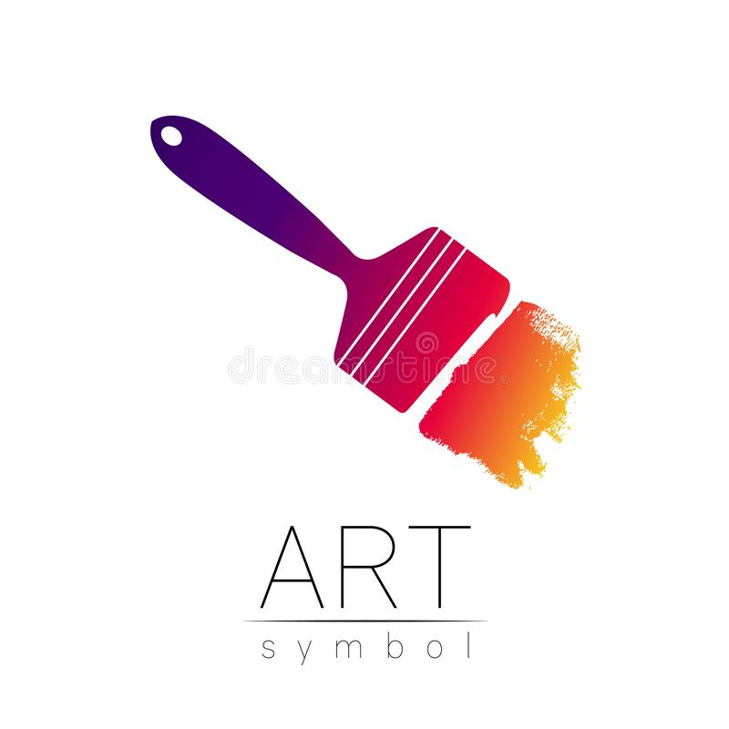
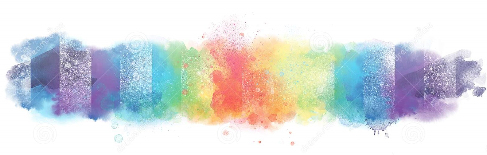
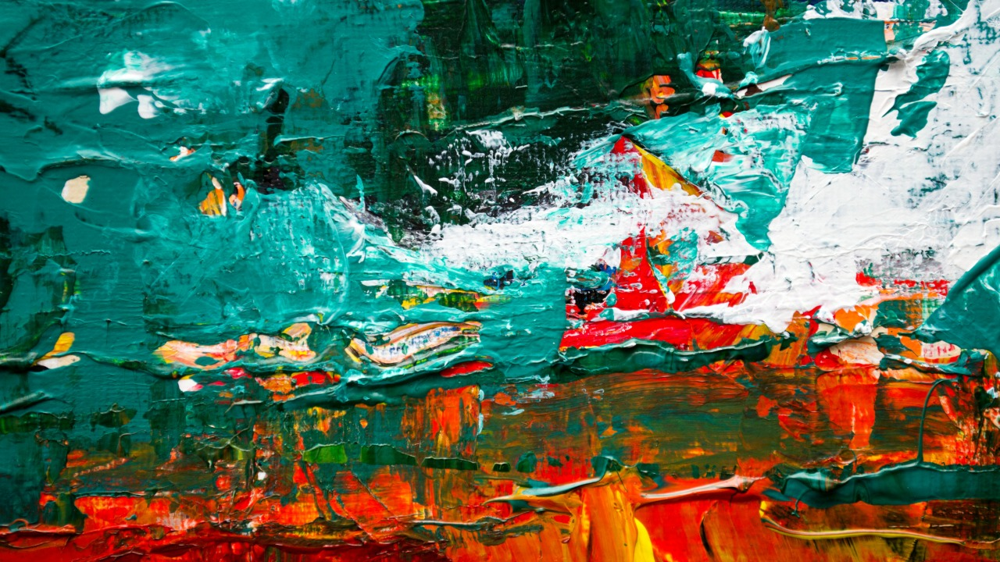

 
Sign Up
Login
Inicio
Home
Dropdown
Action
Another action
Something else here
Disabled
Search

AQUA
Artista,
Giancarlo Bertini
El artitsa menciona que, los colores en la pintura, como en otras facetas de la vida, expresan sentimientos. Transmiten mejor lo que queremos expresar con el arte. Son sentimientos que los colores provocan en las personas, tocan su yo interno y lo condicionan, afectando a su conducta y toma de decisiones.
Obra única, creada en el año 2019
Acrílico, técnica mixta
Medidas 60 X 43 cms.
$1.450.000